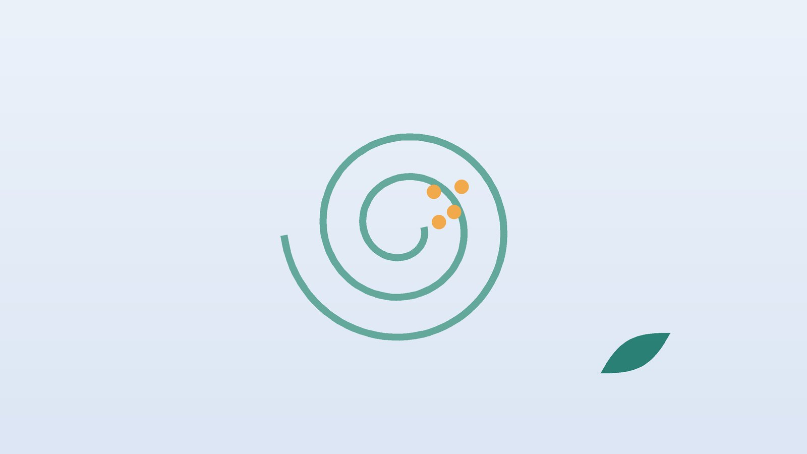

건강 칼럼 · 인천 이석증 한의원
고개를 돌릴 때 세상이 빙글 돈다면, 이석증 확인과 한방 관리

나의 어지럼, 이석증과 닮았나요?
- 누울 때, 일어날 때, 돌아누울 때 갑자기 주변이 빙글 돈다
- 도는 느낌은 대개 1분이 지나기 전에 잦아든다
- 가만히 있으면 괜찮다가 머리 위치를 바꾸면 다시 시작된다
- 선반 위 물건을 보려고 고개를 젖히거나 머리를 감으려고 숙일 때 어지럽다
- 어지러운 뒤 한동안 속이 울렁거리고 몸이 붕 뜬 느낌이 남는다
- 귀가 먹먹하거나 소리가 줄지는 않았다
이 체크리스트는 진단 도구가 아니라 상담이 필요한지 가늠해 보는 참고용입니다.
이석증은 왜 생기고 어떻게 확인하나요?
귓속 깊은 곳의 전정기관에는 몸의 기울기를 감지하는 탄산칼슘 결정, 즉 이석이 붙어 있습니다. 나이가 들거나 머리를 부딪친 뒤, 오래 누워 지낸 뒤, 특별한 이유 없이도 이 결정이 떨어져 회전을 감지하는 반고리관 안으로 흘러들 수 있습니다. 그러면 머리를 움직일 때마다 돌가루가 관 속 액체를 휘저어 뇌는 실제보다 훨씬 크게 돈다고 착각하게 됩니다. 중년 이후, 특히 여성에게 흔합니다.
미국 이비인후과·두경부외과학회의 이석증 진료지침(2017년 개정)은 누운 자세에서 머리를 돌려 눈떨림(안진)을 관찰하는 딕스-홀파이크 검사와 누운 채 고개를 좌우로 돌리는 검사로 어느 반고리관이 문제인지 확인하라고 권고합니다. 전형적인 모습이 확인되면 영상 검사를 일상적으로 할 필요는 없고, 이석 정복술을 시행하며, 어지럼 억제약은 습관적으로 쓰지 않도록 권합니다. 같은 지침은 치료 후 한 달 안에 다시 확인해 증상이 남거나 다른 원인이 의심되면 추가 평가를 하라고 합니다.
이석증이 아닐 수 있는 위험 신호
- 말이 어눌해지거나 얼굴 한쪽이 처진다
- 한쪽 팔다리에 힘이 빠지거나 감각이 무디다
- 물체가 두 개로 겹쳐 보인다
- 혼자서는 서거나 걷기 어려울 만큼 한쪽으로 쏠린다
- 처음 겪는 심한 두통이나 뒷목 통증이 함께 왔다
- 머리를 움직이지 않아도 몇 시간 이상 계속 돈다
이런 신호는 소뇌나 뇌간의 뇌졸중에서 나타날 수 있어 기다리지 말고 119나 응급실을 찾으세요. 한쪽 귀가 갑자기 안 들리거나 이명이 함께 생겼다면 돌발성 난청이나 메니에르병 같은 다른 귀 질환을 감별해야 하므로 이비인후과를 바로 방문하세요.
한의학은 이석증을 어떻게 이해하나요?
귓속 돌가루라는 개념은 현대 해부학에서 나온 것이라 고전에 같은 이름은 없습니다. 다만 한의학에서는 고개를 돌리거나 몸을 눕힐 때 빙 도는 증상을 현훈(眩暈)의 한 모습으로 다루었고, 특히 체위에 따라 터지는 짧은 어지럼은 흐름이 막힌 진액, 곧 담음(痰飮)과 머리까지 기혈을 올려 보내는 힘이 약해진 상태를 함께 보았습니다. 돌가루를 제자리로 돌리는 일은 정복술이 맡고, 한의학은 그 돌가루가 쉽게 떨어지고 회복이 더딘 몸의 바탕을 봅니다.
실제로 정복술로 회전감은 멈췄는데도 며칠에서 몇 주씩 머리가 멍하고, 배를 탄 듯 흔들리며, 속이 메스꺼운 잔여 어지럼을 호소하는 분이 적지 않습니다. 한의학에서는 이를 위장의 기운이 약해 담음이 머리를 맑게 하지 못하는 상태, 오래 누워 지내거나 과로로 기혈이 바닥난 상태, 긴장과 불안으로 기운이 위로 몰린 상태로 나누어 접근합니다.
정복술 뒤 남는 불편, 어떤 유형일까?
1. 담음중조(痰飮中阻) 울렁거림이 오래가는 유형
- 이런 분에게 많아요
- 위장이 약하고 몸이 잘 붓는 분
- 나타나는 모습
- 회전은 멈췄지만 머리가 무겁고 메스꺼움이 남는다
- 함께 오는 몸의 신호
- 식욕 저하, 더부룩함, 가래
- 진찰에서 보이는 모습
- 설태가 희고 끈적함, 맥이 미끄러움
- 치료 방향
- 담음을 걷어 내고 위장을 편하게 하는 방향 (반하백출천마탕 계열)
- 오늘부터 해 볼 것
- 찬 음료와 기름진 야식을 며칠만이라도 끊어 보세요.
2. 기혈허(氣血虛) 기운이 달려 흔들리는 유형
- 이런 분에게 많아요
- 출산·수술·긴 병치레 뒤이거나 마른 체형인 분
- 나타나는 모습
- 오후나 피곤할 때 몸이 둥둥 뜨고 쉽게 재발한다
- 함께 오는 몸의 신호
- 얼굴이 창백함, 손발 저림, 숨이 참
- 진찰에서 보이는 모습
- 혀가 연하고 맥이 가늚
- 치료 방향
- 기와 혈을 채워 머리로 올려 보내는 방향 (귀비탕·팔진탕 계열)
- 오늘부터 해 볼 것
- 끼니를 거르지 말고 낮에 햇볕을 쬐며 걸으세요.
3. 간기울결(肝氣鬱結) 또 돌까 봐 긴장하는 유형
- 이런 분에게 많아요
- 예민하고 걱정이 많은 분
- 나타나는 모습
- 어지럼이 다시 올까 두려워 고개를 굳히고 지낸다
- 함께 오는 몸의 신호
- 목 뻣뻣함, 두근거림, 잠을 설침
- 진찰에서 보이는 모습
- 혀 옆쪽이 붉고 맥이 줄처럼 팽팽함
- 치료 방향
- 뭉친 기운을 풀고 마음을 가라앉히는 방향 (소요산 계열)
- 오늘부터 해 볼 것
- 목을 억지로 고정하지 말고 천천히 움직이는 연습을 하세요.
4. 신허(腎虛) 나이 들며 자꾸 되풀이되는 유형
- 이런 분에게 많아요
- 중년 이후, 골밀도가 낮다는 말을 들은 분
- 나타나는 모습
- 1년에도 여러 번 재발하고 회복이 더디다
- 함께 오는 몸의 신호
- 허리·무릎 시큰거림, 귀 울림
- 진찰에서 보이는 모습
- 혀가 붉거나 연하고 맥이 깊고 약함
- 치료 방향
- 신의 기운을 돋우는 방향 (육미지황환 계열)
- 오늘부터 해 볼 것
- 뼈 건강 검진과 비타민 D 수치 확인을 함께 받아 보세요.
한의원에서는 어떻게 진찰하나요?
- 앞선 진료 확인: 이비인후과·신경과 진단명, 어느 쪽 반고리관인지, 정복술을 몇 번 받았는지 확인합니다.
- 남은 증상: 회전감이 남았는지, 멍함과 울렁거림만 남았는지, 걸을 때 흔들리는지 구분합니다.
- 위험 요인: 혈압, 당뇨, 복용 약, 최근 넘어짐이나 머리 부딪힘이 있었는지 여쭙니다.
- 설진·맥진: 담음, 기혈 부족, 긴장의 비중을 판단해 유형을 정합니다.
침·약침·한약 치료는 어떻게 하나요?
1. 침 치료
회전감이 있는 시기에는 고개를 크게 돌리지 않는 자세로 앉아서 치료합니다. 정수리 한가운데의 백회(百會), 뒷머리 아래 두 굵은 근육 바깥 오목한 곳의 풍지(風池), 손목 안쪽 주름에서 팔꿈치 쪽으로 손가락 세 마디쯤 올라간 두 힘줄 사이의 내관(內關), 무릎 아래 바깥쪽 정강이뼈 옆의 족삼리(足三里)를 주로 씁니다. 머리가 무거우면 종아리 바깥쪽의 풍륭(豊隆)을 더합니다.
침 치료는 돌가루를 제자리로 돌려보내는 치료가 아니므로 정복술을 대신하지 않습니다. 정복 뒤 남는 어지럼과 울렁거림, 목과 어깨의 긴장을 덜어 일상 복귀를 돕는 보조 치료로 생각해 주세요.
2. 약침
어지럼이 무서워 목을 굳히고 지내다 생긴 뒷목과 어깨 근육의 뭉침에 약침을 적용할 수 있습니다. 회전감이 남아 있는 시기에는 목을 비트는 시술을 하지 않습니다.
3. 한약
유형에 맞는 처방으로 잔여 어지럼과 소화 불편, 피로를 함께 돌봅니다. 혈압약, 항응고제, 수면제 등 복용 중인 약이 있으면 알려 주시면 처방에 반영합니다.
원장님이 네이버 블로그에 진료 이야기와 건강 정보를 꾸준히 올리고 있습니다. 더 많은 이야기는 블로그에서 확인해 보세요.
블로그 보기치료는 어떤 순서로 진행되나요?
- 이비인후과·신경과 진단 검사로 어느 반고리관인지 확인하고 이석 정복술을 받습니다.
- 정복 후 1~2주 남는 멍함과 울렁거림, 목 긴장을 침 치료와 한약으로 살핍니다.
- 한 달 무렵 회전감이 다시 생기면 정복술을 다시 받고, 남은 불편과 컨디션을 점검합니다.
- 재발 관리 잦은 재발이 있으면 수면, 활동량, 뼈 건강을 함께 챙깁니다.
회전감이 다시 생기면 먼저 정복술을 받는 것이 원칙이며, 한방 치료 기간은 남은 증상과 재발 빈도에 따라 진찰 후 안내합니다.
재발을 줄이는 생활 관리
- 일어나는 순서: 아침에는 옆으로 돌아누운 뒤 팔로 짚고 천천히 앉아 잠시 쉬었다가 일어섭니다.
- 낙상 대비: 어지러운 시기에는 밤에 화장실 가는 길에 불을 켜 두고, 계단과 욕실에서 손잡이를 잡습니다.
- 너무 오래 눕지 않기: 어지럽다고 며칠씩 누워만 있으면 균형 감각 회복이 늦어지니, 안전한 범위에서 걷습니다.
- 햇볕과 걷기: 낮 시간 산책은 비타민 D와 균형 감각 유지에 함께 도움이 됩니다.
- 스스로 하는 운동: 집에서 하는 정복 운동은 어느 쪽 반고리관인지에 따라 방법이 달라 담당 의사에게 배운 방식만 하세요.
다른 진료가 함께 필요한 경우
- 정복술을 여러 번 받아도 회전감이 계속되면 다른 원인을 찾기 위해 신경과 정밀 검사를 받으세요.
- 청력 저하나 귀 먹먹함이 함께 있으면 이비인후과에서 청력 검사를 받아야 합니다.
- 1년에 여러 번 재발하는 중년 여성은 골다공증과 비타민 D 결핍 검사를 고려해 보세요.
- 넘어져 머리를 부딪친 뒤 생긴 어지럼은 외상 평가가 먼저입니다.
자주 묻는 질문 Q&A
- Q1. 이석증은 한의원에서 바로 치료할 수 있나요?
- 돌가루를 제자리로 돌리는 정복술은 이비인후과나 신경과에서 먼저 받으시고, 남는 불편을 한방으로 함께 관리합니다.
- Q2. 정복술을 받았는데 왜 아직 멍한가요?
- 회전감이 멈춘 뒤에도 며칠에서 몇 주간 흔들리는 느낌이 남는 경우가 흔합니다.
- Q3. 유튜브를 보고 혼자 정복 운동을 해도 되나요?
- 방향을 잘못 잡으면 오히려 어지러울 수 있어 진단받은 쪽과 방법을 확인한 뒤 하세요.
- Q4. 어지럼약을 계속 먹어야 하나요?
- 지침은 어지럼 억제약을 습관적으로 쓰지 말라고 권합니다. 복용은 처방한 의사와 상의하세요.
- Q5. 뇌졸중과 어떻게 구별하나요?
- 말 어눌함, 팔다리 힘 빠짐, 겹쳐 보임, 혼자 서기 힘든 비틀거림이 있으면 바로 응급실로 가세요.
- Q6. 이석증은 다시 생기나요?
- 정복 뒤에도 재발이 드물지 않아 생활 관리와 정기 확인이 필요합니다.
- Q7. 비타민 D가 관련 있나요?
- 국내 연구에서 비타민 D가 부족한 환자에게 보충했을 때 재발이 줄었다는 결과가 있어 검사를 고려할 만합니다.
- Q8. 침 치료는 얼마나 받나요?
- 남은 증상의 정도에 따라 다르며 보통 1~2주 단위로 경과를 확인합니다.
문원열 대표원장한의사 · 365스마일한의원
인천 서구 가정동 한자리에서 10년 넘게 진료하며, 환자 한 분 한 분의 아픔을 깊이 들여다보고 근본적인 원인을 찾는 진료를 지향합니다.
진료 안내
- 진료시간
- 평일 09:00~20:00 (점심시간 13:00~14:00)
토·일·공휴일 09:00~15:00 - 주소
- 인천광역시 서구 가경주로 46, 2층 (가정동)
인천2호선 가정중앙시장역 인근
영상으로 길 안내 보기 → - 주차
- 한의원 건물 바로 앞 1층 도원주차장
- 예약
- 예약 바로가기 또는 전화 예약
진료시간은 사정에 따라 바뀔 수 있으니 방문 전 전화로 확인해 주세요.
함께 읽으면 좋은 칼럼
건강 칼럼 전체 보기 →

참고 자료
- Bhattacharyya N, et al. Clinical Practice Guideline: Benign Paroxysmal Positional Vertigo (Update). Otolaryngology–Head and Neck Surgery, 2017 — 원문
- Jeong SH, et al. Prevention of benign paroxysmal positional vertigo with vitamin D supplementation: a randomized trial. Neurology, 2020
- 질병관리청 국가건강정보포털 — 원문
※ 이 글은 일반적인 건강 정보이며, 개인의 상태에 따라 치료 방법과 결과는 다를 수 있습니다. 정확한 진단과 치료는 진료를 통해 결정됩니다. 침·약침 시술 후 드물게 멍, 통증 등이 생길 수 있습니다.